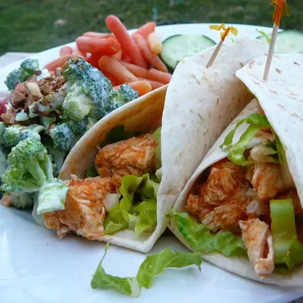

Home
Buffalo Chicken Wrap

Description
These simple Buffalo chicken wraps can be customized with your family's favorite toppings. Try shredded cheese, tomatoes, or onions.
Ingredients
- 1 tablespoon vegetable oil
- 1 tablespoon butter
- 1 pound skinless, boneless chicken breasts, cut into bite-size pieces
- ¼ cup hot sauce
- 4 (10 inch) flour tortillas
- 2 cups shredded lettuce
- 1 celery stalk, diced
- ½ cup blue cheese dressing
Steps (3)
- Heat oil and butter in a large skillet over medium-high heat until butter melts. Add chicken; cook and stir until no longer pink in the center and the juices run clear, about 10 minutes. Remove from the heat.
- Pour hot sauce into the skillet and toss until chicken is coated.
- Lay tortillas out on a work surface. Divide sauced chicken evenly among tortillas, top with lettuce and celery, then drizzle blue cheese dressing over top. Fold in tortilla sides and roll around filling.
Source